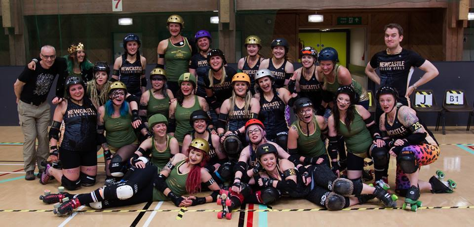

Newcastle's Hinnies off to Champs
We're tracking the Northern divisions of the British Champs this year, via a focus on particular teams in each Tier. The Whippin' Hinnies, Newcastle B, are our Tier 2 North team, and we're starting by giving you a bit of background.
Newcastle Roller Girls have had a good relationship with British Champs over the last two years - in 2015, the Canny Belters took the win in the Tier 2 tournament (after winning the Tier 2 North itself), while in 2016, promoted to Premier Tier, they won the entire thing.
This year, though, Newcastle A have decided to step down from the tournament to pursue more international fixtures, and have handed the baton of British Champs to their B-team, the Whippin' Hinnies. Competing in the Tier 2 North, the Hinnies will have their first game of the Championships this weekend, against Cambridge Rollerbillies [hosted by Rainy City Roller Derby].
According to Flat Track Stats, the Hinnies have the most difficult spot in the tier; but start-of-season rankings are the least accurate, due to the tendency for roster changes in the off-season, and other significant changes.
 The Whippin' Hinnies with Royal Swedish Roller Derby, 2016
Whippin' Hinnies Co-Captain Method Mam talked to us about how the team are feeling about their first Champs challenge.
- Compared to some B teams, the Whippin' Hinnies always have quite a busy schedule, and 2016 continued that trend with plenty of action. What was your highpoint of the previous season?
Ah, that's tough one. We certainly enjoyed playing The Royal Swedish Roller Derby, they were a super fun team and it was an exciting game. We were also really proud to play a double header with our Belters against ARRG All-Stars and All-Star Reserves and to manage a double win at home at the end of last season. ARRG was one of the first teams NRG ever played and are a league we've always looked up to.
- The Hinnies are one of two B teams in the Tier 2 North, along with Rainy B. In your case, though, you're replacing the A team as Newcastle's Champs representatives. With the Canny Belters having won the Tier 1 last year, is there additional pressure to live up to the standard they've set?
I don't think the Hinnies feel any extra pressure due to the Belters knock out performance last year. We're one big league; we have three competitive teams now, we practise together, coach each other and celebrate each others' successes. The Hinnies are in it this year for the learning experience and the opportunity to play a super high standard of competitors.
- The Tier 2 North contains a few teams which the Hinnies have played pretty recently - the aforementioned Rainy B, and your first opponents this weekend, Cambridge Rollerbillies. Both of those teams gave you very tough games last year: how do you feel about facing them again in Champs?
Excited! Both games were really good and given our ranking differentials we were happy with the results. We also experienced quite different styles of play from these two teams which meant both games were interesting. We can't wait to get stuck into the next 'round' this weekend!
- Outside of Champs, which admittedly is a pretty packed schedule, is there anything else planned for the Hinnies this year? [You've managed an international bout every year since 2014…]
That would be telling! (entire team adopts air of mystery...) You'll just have to keep an eye on the fixtures page on our website